| 週刊文春ミステリーベスト10 2015【文春e-Books】 | |
| Unknown | |
＊ 読む際のご注意、お断り等については こちら をお読み下さい。
※本コンテンツは週刊文春２０１５年12 月10 日号に掲載された記事を再構成したものです。
タイトルをクリックするとその文章が表示されます。
文春e-Books
週刊文春presents
全国のミステリー通、書店員が選ぶ
週刊文春ミステリーベスト10 ２０１５
年末恒例「ミステリーベスト10 」の結果は、39 回を数える本企画史上初の国内・海外両部門ともに同じ著者が連続１位！ 各界の目利きが選んだ究極の〝徹夜本〟をご堪能あれ !!
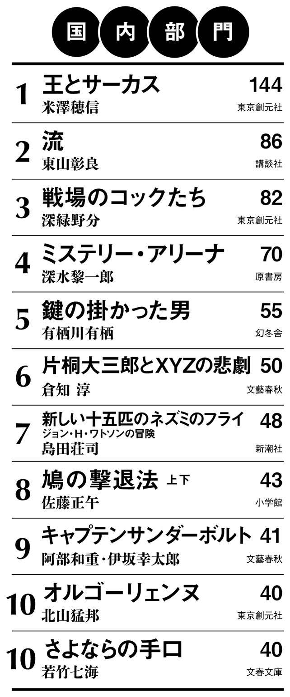
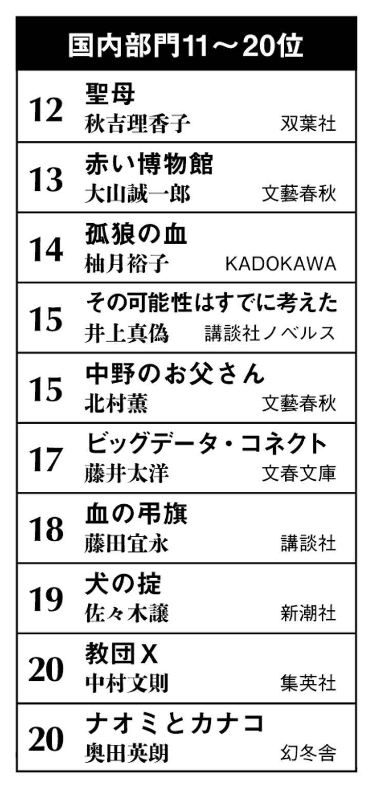
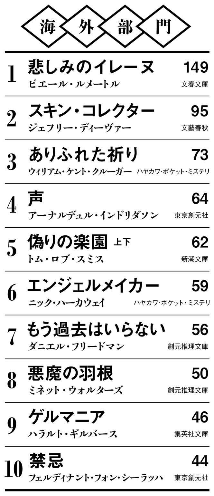
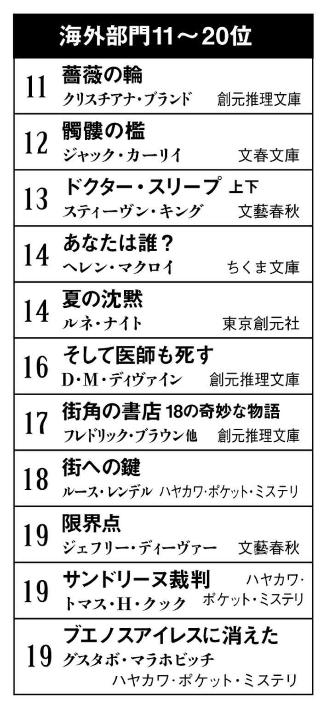
アンケートにご回答頂いたのは全国の日本推理作家協会会員及びミステリー作家、文芸評論家、書店員、翻訳家、各大学ミステリー研究会の皆さんです。
投票の対象は発行日が２０１４年11 月１日から２０１５年10 月31 日までの本です。１位は５点、以下、４点、３点、２点、１点として集計しました。国内部門の投票数は１６８、海外部門の投票数は１５６でした。
昨年の本企画、第一位インタビューで米澤穂信さんは「来年、『王とサーカス』という長篇を予定しています」と答えている。まさにその作品で今年も堂々の一位に輝いた。
「『王とサーカス』のテーマは〝青い〟と思われるかもしれない、どれ程の年齢層に楽しんでいただけるだろう、という不安はあったので、週刊誌という大人の場で評価していただけて大変嬉しいです」
二〇〇一年六月に起きたネパール王族殺害事件。『さよなら妖精』（〇四年刊）で高校生だった太 刀 洗 万 智 が、本作ではジャーナリストとしてこの事件に立ち合うことになる。遠い異国の事件をなぜ自分が〝伝える〟のか──。太刀洗は葛藤を抱えつつ、取材途中で遭遇した新たな殺人事件の謎をも追ってゆく。
「もっと若い記者は仕事を覚えるのに精一杯でしょうし、逆にもっと年齢を経たならばプロとしてそういう葛藤はもう乗り越えていてほしい。前作の十年後、二十八歳という太刀洗の年齢はその点でちょうど良かった。また、私はいつも舞台と謎と物語の融合を目指して書き始めるのですが、〝伝える〟という主題には、時代的にまだインターネットが普及しきっていない、かつ九・一一が起きる前こそ適していました。以降は誰もが発信できるようになり、テーマが変わってきてしまうので」
──悲劇を消費しているのだと考えたことはないか？
ネパール王宮に仕えるラジェスワル准尉から太刀洗に向けられる台詞だ。〝伝える〟という行為は〝受け手〟がいてこそのもの。太刀洗の葛藤は、物語が進むにつれ、また読者のものともなってゆく。
「この小説は、なぜ〝書く〟かという作家の仕事への自己言及にもなることは強く意識していました。その上で〝受ける〟ことについても陰影的に描き出せたらと」
世界的事件を背景に導き出される、一人の男の死の真相、〝伝える〟理由が胸を衝く。
「私はミステリーを書く人間なので、謎が解けることで人の思惑が動く瞬間に向かって物語を進めていきます。今作はホワイダニット、動機の物語にしたいとは最初から決めていましたが、なぜ〝伝える〟のかという答えはプロットにはなく、書きながら辿り着いた感があります」
連覇達成で、今後の作品にもますます期待が高まる。
「太刀洗を主人公とする短編集『真実の一〇メートル手前』が今月刊行となります。また、来年は悪女をテーマにした長篇も予定しています」
史上初の三連覇なるか!?
よねざわほのぶ １９７８年岐阜県生まれ。２０１１年『折れた竜骨』で日本推理作家協会賞受賞。14 年『満願』で山本周五郎賞受賞、昨年の本ランキング第１位など３冠に輝いた。
① 『王とサーカス』
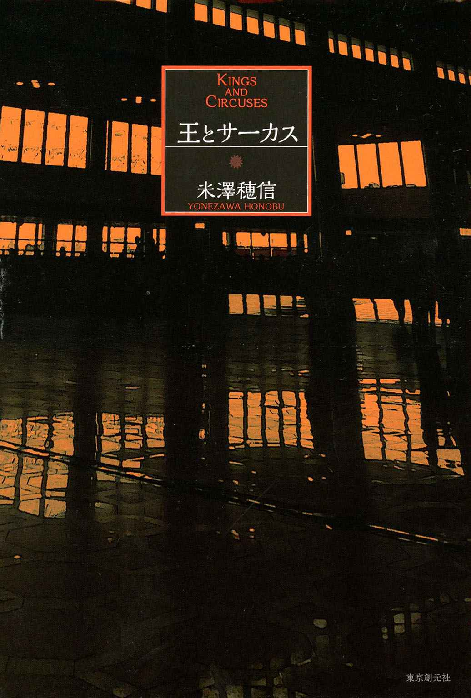
知ること、伝えること、異国情緒溢れる舞台で、重厚なテーマに挑んだ傑作
二○○一年、新聞記者の仕事を辞めてフリーライターになった太 刀 洗 万 智 は、雑誌のアジア特集の事前取材としてネパールの首都カトマンズにやってきた。ある夜、彼女は驚くべきニュースを耳にする。王宮で、ビレンドラ国王をはじめとする大勢の王族が皇太子によって殺害され、皇太子自身は自殺を図ったというのだ。翌朝、この件で取材を開始した万智は、王宮に配属されている軍人ラジェスワル准尉と会うことに成功するものの、ラジェスワルは「お前はサーカスの座長だ。お前の書くものはサーカスの演 し物だ。我々の王の死は、とっておきのメインイベントというわけだ」と取材を拒む。そして翌日、王宮の近くで民衆と警官のあいだに起きた騒動に巻き込まれた万智は、密告者を意味する「INFORMER」という言葉が背中に刻み込まれた死体を発見する。国王弑 逆 という非常事態に揺れるカトマンズで、万智はいつのまにか不可解な事件の渦中の人となっていたのだ。
著者の初期を代表する傑作学園ミステリー『さよなら妖精』から十一年、高校生だった太刀洗万智がフリーライターとして再び登場。実際に起きたネパール王族殺害事件を背景に、見事な謎解きの中から重い問いを突きつけてくる作品。
ここが魅力！
辻真先 「題材といい描写といい、頑丈な伽藍を仰ぎ見るよう」
高津祐典（朝日新聞） 「記者にとって、決して忘れてはいけない言葉が並ぶ。主人公の記者と取材を拒む軍人との〝審問〟の部分は、繰り返し読んでおきたい」
香山二三郎 「現地取材していないって本当!? ネパール・カトマンズの風土や人間模様が鮮やかに描き出された迫真のトラベルミステリー」
草皆明子（須原屋ビーンズ武蔵浦和店） 「予想を覆すラスト。読後にタイトルを見直すとぐっとくる」
伊藤昭 「同じ作家を二年続けてベストワンに選んでいいのか？ そのためらいを捩じ伏せるだけの傑作である」
② 『流』
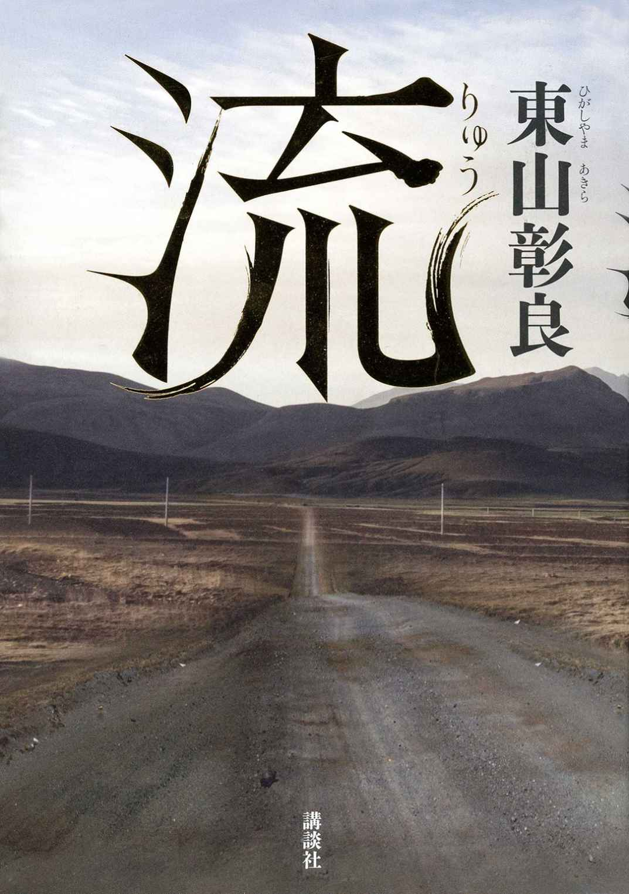
蔣介石の死、祖父の死──台湾に生きた家族史を描く満票での直木賞受賞作
一九七五年、台北市に住む十七歳の高等中学生「わたし」──葉 秋 生 の身辺で二つの大事件が起きた。一つは総統・蔣介石の死、もう一つは祖父・葉尊 麟 の死。尊麟は何者かに殺され、迪化街で営む布屋の浴槽に沈んでいたのを秋生が発見したのだ。
尊麟は第二次世界大戦やその後の共産主義者との内戦で多くの人を傷つけたが、今は昔気質の街の頑固爺。怨恨にしては傷つけられた様子もなかったが、秋生は大陸時代、尊麟の手にかかった者の復讐ではないかと推理する。
捜査が難航する中、秋生は友人にそそのかされ替え玉受験に加担、それがバレて馬鹿な高校への編入を余儀なくされる。そこで喧嘩上等の荒んだ生活を送るようになるが、翌七六年、さすがにこのままではまずいと大学受験に向けて勉強を始める。
しかし、尊麟が信じていたお狐様が奇跡を起こしたり、車でドライブに出て幽霊騒動に巻き込まれるなど、相変わらず波乱に富んだ生活が続くのであった。
舞台は著者の故郷・台湾。自らの家族をモデルに、その数奇な軌跡を活写。ミステリーのみならず、南米文学のマジック・リアリズム的手法も駆使して全選考委員の絶賛を浴びた第153 回直木賞受賞作。
ここが魅力！
中山英（萬松堂古町本店） 「ミステリとしてのエネルギーと躍動感はいまだに私の心を鷲摑みして離さない」
小峠早織（ジュンク堂書店福岡店） 「台湾と主人公の周りの強烈な人々や出来事に惹かれていく。ハラハラドキドキするところがたくさんある」
似鳥鶏 「ひと昔前の台湾のヤンキー、という異世界が生々しくかつ活き活きと描写されています。賢くもなく上品でもないヤンキーたちの送る熱い人生が感動的です」
大森滋樹 「水滸伝や三国志演義の破天荒さがポップな青春小説と合流した！」
③ 『戦場のコックたち』
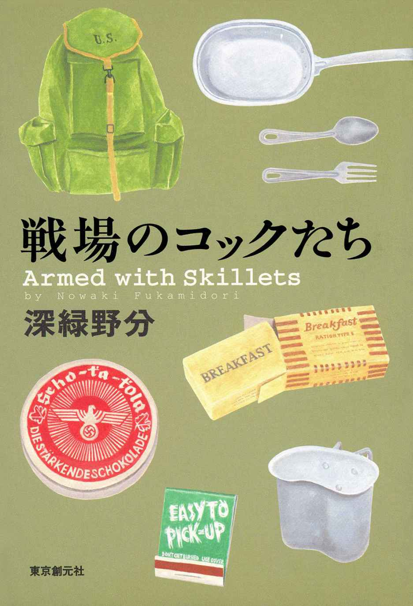
戦場と「日常の謎」を見事に融合してみせた新人作家の初長篇
一九二五年、アメリカはルイジアナ州の田舎町で、雑貨店の息子として生まれたティムは、第二次世界大戦にアメリカが参戦を決定すると、料理を得意とする祖母が記したレシピ帖をお守り代わりに持参して、兵士として出征した。二年ほどの訓練のあいだ、ティムはそこで知り合ったエドからコックにならないかと誘われる。コックは一般兵から軽んじられていたが、仲間の胃袋を管理する重要な任務である。
一九四四年六月、ティムやエドたちはコック兵としていよいよヨーロッパ戦線へと向かい、ノルマンディー降下作戦に参加する。戦友を次々と失い、自らも手を血で染める戦場という非日常空間。だが、そんな場でも、不要となったパラシュートを何故か集めようとする兵士、六百箱もの粉末卵の消失といった、ちょっとした不可解な出来事は発生する。それらの謎に対し、エドが繰り広げる怜悧な推理とは。
第七回ミステリーズ！新人賞の佳作に入選してデビューした著者の初長篇。戦場を舞台にした「日常の謎」という趣向を軸に、戦争の悲惨、極限状態の中で生まれる友情、人種差別といったさまざまなテーマを盛り込んだ感動的な大作。
ここが魅力！
明治大学ミステリ研究会 「謎の面白さだけでなく、戦争の凄まじさ、喪失の悲惨さがひしひしと伝わってくる」
蔓葉信博 「骨太の戦争小説でありながら、『日常の謎』を添えるという発想に脱帽。ぜひドラマ化してほしい傑作です」
芹澤恵 「上質な青春小説でもあり、実は反戦小説でもある......と個人的には思う」
村上貴史 「謎解きの知的遊戯と戦場のリアルを鮮やかに一つに編み上げた絶品」
同志社ミステリ研究会 「ミステリ要素をいい意味でスパイスとして取り込んだ、戦場小説として完成された作品」
④ 『ミステリー・アリーナ』

二十一世紀中葉の日本では、毎年大晦日の夜に歌番組ではなく《推理闘技場 》というクイズ番組が放送され、高視聴率を誇る人気番組となっていた。その第十回は「ミステリーヲタ大会」。推理力に覚えのある十四人のミステリーマニアが、あるテキストをめぐって正解を競い合うという趣向である。テキストの内容は、「俺」という一人称で綴られた殺人事件の物語。豪雨で孤立した別荘に集っていた数人の男女のあいだで確執に満ちた人間模様が繰り広げられ、ついには死体が発見される......という事件の真相を十四人が推理しているあいだ、視聴者もリモコンで頁を操作してテキストを読むことができる。また、同じ解答ならば少しでも早く解答ボタンを押した者が勝ちとなるというルールだ。キャリーオーバーで溜まりに溜まった賞金はなんと二十億円。テキストの二章までが読み上げられた時、早くも一人が解答ボタンを押した......。
ベストセラー『最後のトリック』の著者が、巨額の金がかかった人生逆転ゲームを通じて、多重推理本格ミステリーの極北に挑んだ労作。
ここが魅力！
はやみねかおる 「すごい発想だと思います。バカミスと呼ばれるかもしれませんが、とても好きです」
松谷明（ジュンク堂書店大阪本店） 「ブラック・ユーモア溢れる作りがたまらない。意地悪な作品、好きです」
生駒聖（TSUTAYA BOOK部） 「ミステリー読者への贅沢な贈り物。大爆笑をお約束」
青崎有吾 「一気読みできる面白さは今年のナンバー１」
鳥飼否宇 「全編が解決編という着想には驚きました」
輪渡颯介 「面白くスラスラと先へ先へ進んでしまう。そして裏切られる連続」
⑤ 『鍵の掛かった男』
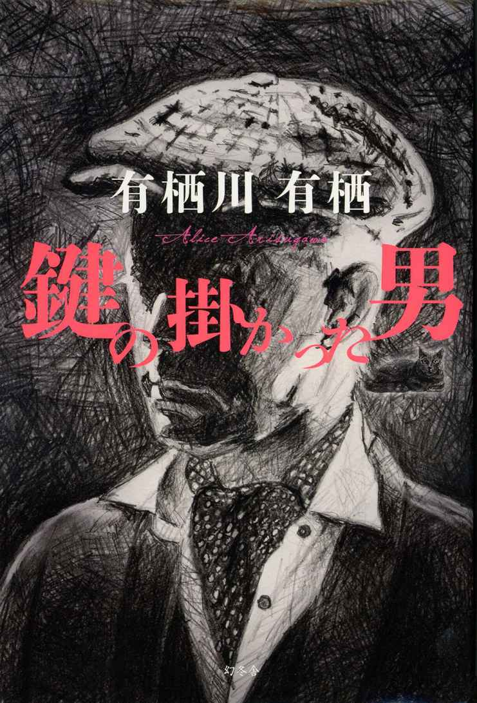
臨床犯罪学者と呼ばれる名探偵・火村英生の友人である推理作家・有栖川有栖（通称アリス）は、流行作家の影浦浪子から、彼女が定宿としている大阪のホテルで、梨田稔という人物の縊死体が発見された件の再調査を依頼される。警察が下した自殺という結論に納得できない影浦は、二つの謎をそれぞれアリスと火村に解いてほしいという。ひとつは、梨田が他殺だとすれば誰に殺されたのかという謎。もうひとつは、梨田とはどんな人物だったのかという謎だ。ホテルの４０１号室に五年ほど滞在していた梨田は、自分の過去を語ろうとしない謎めいた人物だった。アリスは大学の仕事が多忙ですぐには動けない火村に代わり、ホテルのスタッフや常連客や事件を担当する刑事らに会い、梨田の過去を調べはじめる。二億二千万円以上の預金がありながら世捨て人のような生活を送っていた梨田は、どんな過去を背負い、何を思って生きていたのか。そして彼が死ななければならなかった理由とは。
普段は火村のワトソン役として一緒に行動するアリスが、単独行動で謎に挑むという新機軸が光る意欲作。
ここが魅力！
松浦正人 「圧倒的で明晰な構成の離れわざに、心うたれた」
狩野洋一 「テーマを〝密室〟から〝閉ざされた人間の過去〟に転じた発想に脱帽するしかない」
佳多山大地 「ハードボイルドに進んで、本格ミステリーで仕舞う。現代本格派の雄、有栖川有栖が新生面を開いた傑作だ」
早見俊 「連続殺人は起きないがそれに勝る人間ドラマと謎解きのロジックの妙は一級」
柘植和紀（星野書店近鉄パッセ店） 「正解を知りたくて一気読みでした。今年の文句なしの一冊」
⑥ 『片桐大三郎とＸＹＺの悲劇』
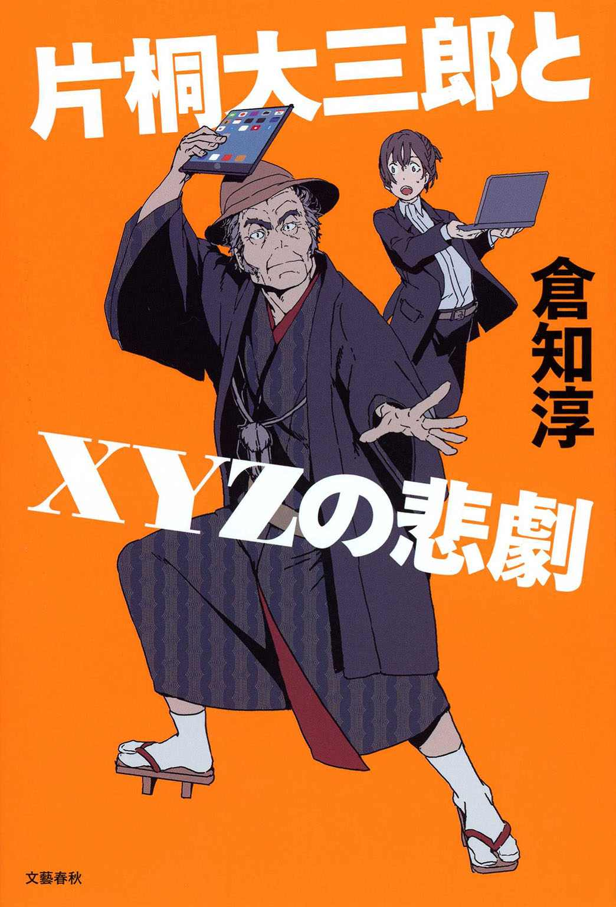
歌舞伎の名門一家に生まれた片桐大三郎は、若くして映画の世界に身を投じ、時代劇スターとして人気を集め、半世紀以上役者一筋で最前線を走り続けた大物である。だが古希を過ぎた頃に聴覚を失い、俳優を引退して芸能プロの社長に収まった。その大三郎には、犯罪捜査に首を突っこみ、事件を解決したがるという妙な趣味があった。
大三郎の「耳」を務める社員の野 々 瀬 乃 枝 が、山手線のホームで人が死ぬのを目撃した。数日後、大三郎の意見を聞くため二人の警察官が彼の会社にやってきた。死因はニコチン溶液の注射による毒殺だったのだ。乗客全員が身動きできない大混雑の中で、犯人はどうやって被害者に毒を注射したのか？ この怪事件に対し、大三郎が披露した推理とは（「冬の章 ぎゅうぎゅう詰めの殺意」）。
破天荒な時代劇スターが挑んだ四つの謎を描く本格ミステリー中篇集。聴覚を失ったシェイクスピア俳優を探偵役とするエラリー・クイーンの不朽の名作「ドルリー・レーン四部作」のパロディとしても高水準な、倉知淳の新たな代表作だ。
ここが魅力！
関西学院大学ミステリ研究会 「設定を現代日本に落とし込みつつ、独自性を見失わない著者の腕前には感服するばかり」
霞流一 「オマージュとパロディとロジックに満ちたクイーン讃歌。読めばニコニコ。これは喜劇だ」
大谷大学推理小説研究会 「マニアックな要素はなくユーモラスで取っ付きやすい雰囲気となっている」
佐藤憲一（読売新聞） 「収録四編すべて推理の切れ味が良く見事に騙された。味わい深い名探偵像、ロジカルな展開、サプライズの三拍子がそろう王道のミステリー」
⑦ 『新しい十五匹のネズミのフライ ジョン・Ｈ・ワトソンの冒険』
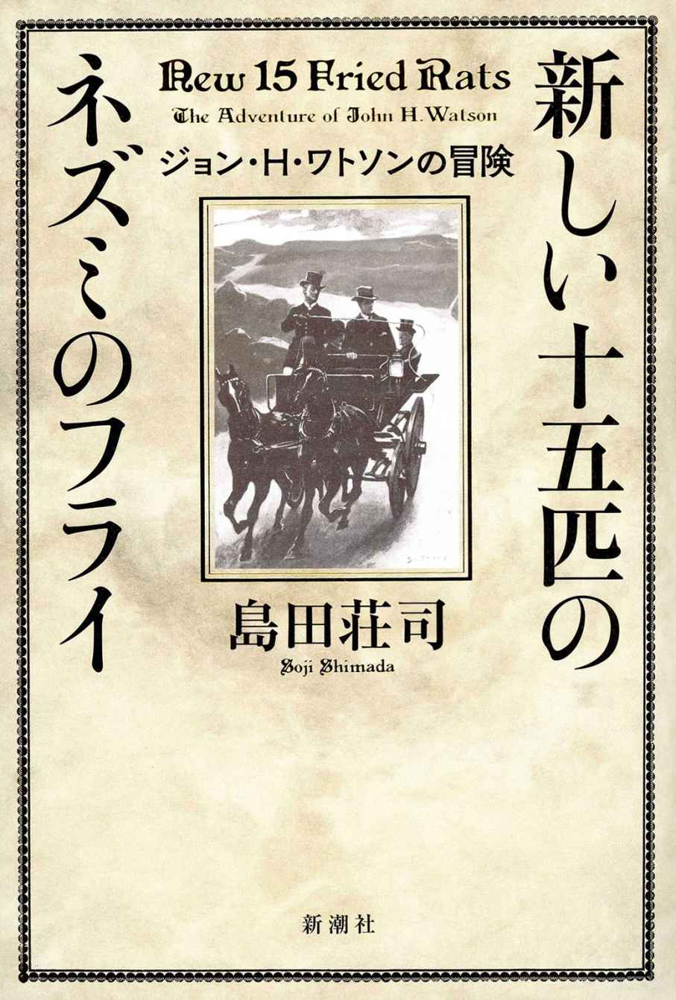
十九世紀末、ジョン・Ｈ・ワトソンは第二次アフガン戦争に軍医として従軍し、重傷を負ったためイギリスに帰国することになったが、ロンドンで知人から紹介されたのは、シャーロック・ホームズという人物だった。ワトソンとホームズはベーカー街で同居することになり、やがてホームズは名探偵として活躍するようになった。奇妙な新聞記事に端を発する「赤毛組合」事件も、ホームズが解決したもののひとつである。ところがその直後、ホームズはコカイン中毒で暴れ出し、ワトソンに傷を負わせた。折も折、赤毛組合事件の犯人たちが、絶対脱獄不可能と言われているプリンスタウンの刑務所から脱獄した。ホームズが全く頼りにならない状態の今、ワトソンはこの事態にどう立ち向かうのか？
『漱石と倫 敦 ミイラ殺人事件』から三十一年、島田荘司が再びコナン・ドイルのパスティーシュに挑んだ長篇。ワトソンが世間に公表した原稿ではホームズは美化されており、本物のホームズは重度のコカイン中毒だった......という設定で繰り広げられる、笑いと感動の物語。
ここが魅力！
飯城勇三 「今年の本ではダントツで面白かった」
中山七里 「〝コナン・ドイルの最も偉大な業績はワトソンの創造だよ〟（ポワロの言葉、『複数の時計』より）。この至言を裏打ちする作品」
尾之上浩司 「巨匠が挑んだパスティーシュ。きっちり突き詰めた構成力に圧倒されます」
成城大学ミステリークラブ 「傑作『漱石と倫敦ミイラ殺人事件』に匹敵。謎と感動に満ちた素晴らしい冒険譚」
小島正樹 「ホームズとワトソンのやり取りに、馬車道のあの二人を思い出し、楽しくて謎一杯の冒険譚です」
⑧ 『鳩の撃退法』上下
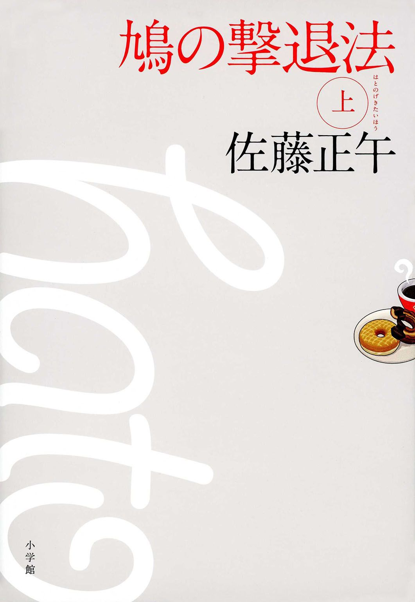
幸 地 秀吉が妻から妊娠を告げられたのは二月二十八日の午後。だがその日を境に幸地家は何故か失踪してしまう。
同じ日の朝、直木賞作家だが、今では地方都市でデリヘルの送迎運転手に身をやつしている津田伸一は、偶然幸地と会い、津田が読んでいたピーターパンの話をしていた。同日夜、津田は懇意にしている古書店主・房州老人とも会って話をし、その直後、二人組の男に女のことで因縁をつけられ殴られる羽目に。
波乱に満ちたその日から一年二カ月後、房州老人が亡くなり、津田は形見のキャリーバッグを受け取る。中にはピーターパンの古本と三千数百万の大金が入っていた。
だが喜びもつかの間、その中の一枚をいきつけの床屋で使ったら、偽札であることが判明。しかもそれを警察のみならず、幸地家の失踪にも関わりがあるらしい街の顔役も追っているというのだ!?
軽妙にして饒舌な語り口と、巧妙に組み立てられたプロット、卓抜した群像劇演出が光る、第六回山田風太郎賞受賞作。
ここが魅力！
式田ティエン 「もうたまりません、このタッチ。もっと読みたい、いつまでも続いて欲しいと思う上下巻は初めて」
安達瑶 「地方都市の何気ない風景のすぐそばにぽっかり口を開けているとんでもない深淵。コージーでキメ細かな描写との落差に痺れます」
朝山実 「どこからが虚構なのか。読者を形容しがたい不安に落としこむ巧みなマトリョーシカ手法による前例のないミステリーだ」
ワセダミステリクラブ 「読者を惑わせ続けた後に明かす仕掛けの完成度は非常に高い」
⑨ 『キャプテンサンダーボルト』
借金まみれの相葉時之は友人を騙したペテン師に一泡吹かせようと山形のホテルを訪れるが、ドアマンが部屋の鍵を取り違えたことから、髭面男とロシア人の怪しい水の取引現場に直面する。
同じ頃、相葉の少年時代の仲間でやはり家計に悩む井ノ原悠は、女性ライターから、公開中止になったかつての戦隊ヒーローもの『鳴神戦隊サンダーボルト』映画版の情報収集を依頼されていた。
窮地を脱した相葉は髭面男から奪ったスマートフォンの中の情報が金になると踏み、男と取引しようとする。そこで偶然井ノ原と再会し、彼も仲間に引き入れようとするが、突如現れた不気味な銀髪の怪人に襲われる。
謎めいた陰謀劇に巻き込まれていく元野球少年たち。人気作家の完全合作による迫真のクロスジャンル・エンタテインメント。
ここが魅力！
横山三英 「この作品が成立したこと自体、ある種のミステリーではないか」
海老沢類（産経新聞） 「物語に奥行きを生む阿部さんらしい企みと、伊坂さん持ち前の巧みな伏線や軽妙洒脱な会話。その奇跡的な融合に酔いしれた」
阿尾正子 「世界を救うのはイケメンのヒーローではなく、大切なものを護ろうとあがく冴えないおっさんなのだ！」
⑩ 『オルゴーリェンヌ』
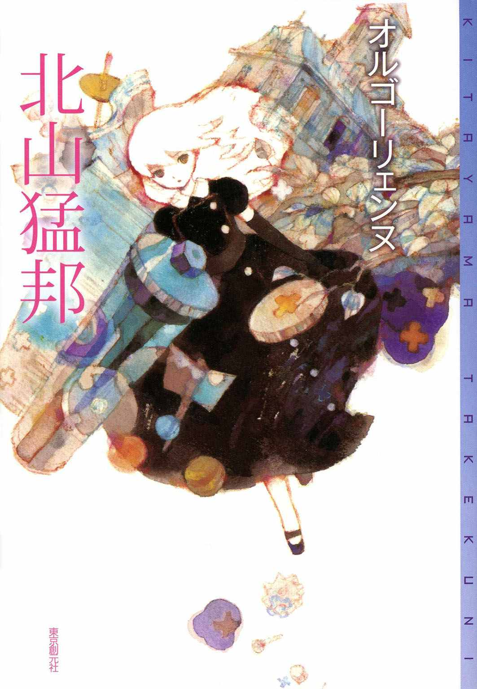
戦争と大洪水に見舞われた後、書物の所持が禁じられ、中でもミステリが弾圧の対象となった世界。作家たちは、ミステリに関するさまざまな知識を、ガジェットと呼ばれる宝石状の物体に封じ込めた。そのガジェットの発見と破壊を使命とするのが少年検閲官だ。イギリスから来た少年クリスと少年検閲官エノは、ある事件の際に出会った後、ガジェットの所持を疑われて逃亡中の少女をめぐって再会し、またしても異様な殺人事件に遭遇する。
ディストピアを舞台に華麗なる物理トリックと論理が炸裂する、『少年検閲官』の続篇にあたる超大作。
ここが魅力！
埼玉大学推理小説研究会 「すべてにおいて調和のとれた傑作」
卯月鮎 「オルゴールのイメージが作品から流れ出し、甘くも張りつめた複雑な味わい」
東京大学新月お茶の会 「美しいモチーフを配置した大胆な仕掛けが驚きと哀しみの幕切れを読者にもたらす」
⑩ 『さよならの手口』
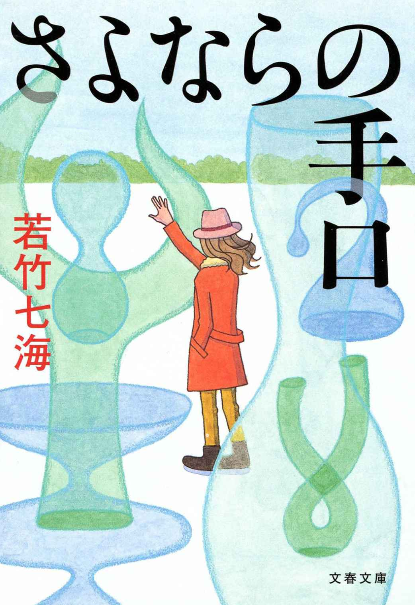
探偵を休業し、吉祥寺のミステリ専門書店でバイトをしていた葉村晶は、亡くなった作家志望の老人の蔵書を整理中、押し入れの床が抜け、ケガを負ったばかりか白骨死体まで発見してしまう。
入院中、それをめぐる真相を暴いてみせるが、そうと知った同室の老女──元女優の芦原吹雪から探偵仕事を依頼される。二十年前に失踪した娘の志緒利を捜してほしいというのだ。報酬目当てでしぶしぶ引き受けたものの、以前雇われた探偵は失踪しており、晶の身辺を探る女も現れる。
中年になった女探偵の活躍を多彩な趣向を駆使して描くシリーズ十三年ぶりの新作。
ここが魅力！
西上心太 「失踪人探しという常道からどんどん外れていく怒濤の展開が見事」
池上冬樹 「実に精緻で見事な女性私立探偵小説。歴史に残る傑作！」
大矢博子 「おかえりなさい、葉村晶！ クールなのにユーモラス、ビターなのにコージー」
『聖母』秋吉理香子 「真実を知ると同時に、くっきりと浮かび上ってくる母親の優しさ、逞しさ、恐ろしさ」（黒田研二）
『孤狼の血』柚月裕子 「えげつない広島弁の会話によって物語にどんどん引き込まれていく」（児玉憲宗・啓文社店売本部）
『その可能性はすでに考えた』井上真偽 「愛すべきトンデモ系ミステリー。仮説の潰しあいが最高にスリリング」（浅ノ宮遼）
『中野のお父さん』北村薫 「日常の謎を書かせたら、北村薫にかなうものなし。こんな父も娘もありえないけど、大好き」（岩田清美）
『犬の掟』佐々木譲 「衝撃の結末にきっと誰もが声を失うに違いない」（松本大介・さわや書店フェザン店）
『デブを捨てに』平山夢明 「おそらく世界ミステリー史上最もダークでシュールな短篇集」（郷原宏）
『ぼぎわんが、来る』澤村伊智 「すごい、すごい怖い話。リアルに伝わる正体不明のものというのがいい」（河内郁夫・大垣書店店舗運営部）
『ナオミとカナコ』奥田英朗 「一気読み小説のお手本」（山下康治・トーハン）
昨年の『満願』に続き、今年も米澤穂信が『王とサーカス』で首位を獲得した（文春ベストテン史上、二年連続で国内部門一位に選ばれた作家は他に横山秀夫のみ）。正直、一位になったのはやや意外だったが、苦い読後感は著者らしかった。二位は東山彰良の直木賞受賞作『流』。台湾・中国・日本が舞台の成長物語だ。受賞作といえば、八位の佐藤正午『鳩の撃退法』も山田風太郎賞を受賞したばかりである。
本格ミステリーでは、有栖川有栖が『鍵の掛かった男』でワトソン役が前面で活躍する異色の趣向を試み、倉知淳は『片桐大三郎とＸＹＺの悲劇』でエラリー・クイーンに挑戦、島田荘司は久々にホームズ・パスティーシュ『新しい十五匹のネズミのフライ』を執筆した。こうしたヴェテラン勢の活躍に対し、初長篇『戦場のコックたち』で深緑野分が大健闘。『ミステリー・アリーナ』の深水黎一郎と『オルゴーリェンヌ』の北山猛邦も、自作の最高水準を更新することで文春ベストテン初ランクインを果たした。
意外にも、若竹七海も今回が初のベストテン入り。不運な女性私立探偵が活躍する『さよならの手口』は読みどころ満載の出来。阿部和重と伊坂幸太郎という異色の顔合わせの『キャプテンサンダーボルト』は、謎が謎を呼ぶスピーディーなエンタテインメント。ベストテン入りは逃したが、十二位の秋吉理香子『聖母』、十五位の井上真偽『その可能性はすでに考えた』といった清新な顔ぶれも要注目だ。
（千街晶之）
昨年『その女アレックス』で本好きの度胆を抜いたピエール・ルメートル氏、見事、二連覇達成です。
『悲しみのイレーヌ』はルメートル氏のデビュー作。『その女アレックス』で謎の女アレックスを追った捜査陣、小男のカミーユ・ヴェルーヴェン警部にケチだが粘り強く捜査にあたるアルマン刑事、富豪の息子で気のいいイケメン刑事・ルイ、そして巨漢の上司ル・グエン、いずれも魅力的な彼らも、『悲しみのイレーヌ』で初登場しました。
本書の焦点となるのは連続殺人事件ですが、ルメートル氏の作品ですから、ありがちなサイコ・サスペンスではありません。犯人の狙いが判明するや、この『悲しみのイレーヌ』という小説は、とんでもなく挑戦的な真相を明らかにして、ヴェルーヴェン警部たちはもちろん、それを読んでいる皆さんにも、悪意の牙を剝くのです──。
『その女アレックス』も読者を翻弄する驚きを仕掛けたサスペンスでした。それに先立つ『死のドレスを花婿に』にも、物語の様相をがらりと変える衝撃がひそんでいました。この『悲しみのイレーヌ』もまた、これまで自分が読んでいた物語がまったく違ったものに変容する 、というルメートル氏らしい大胆なサプライズを擁した傑作なのです。
（文春文庫 永嶋俊一郎）
ピエール・ルメール １９５１年フランス・パリ生まれ。２００６年『悲しみのイレーヌ』でデビュー。これまで４作が邦訳されている。
① 『悲しみのイレーヌ』
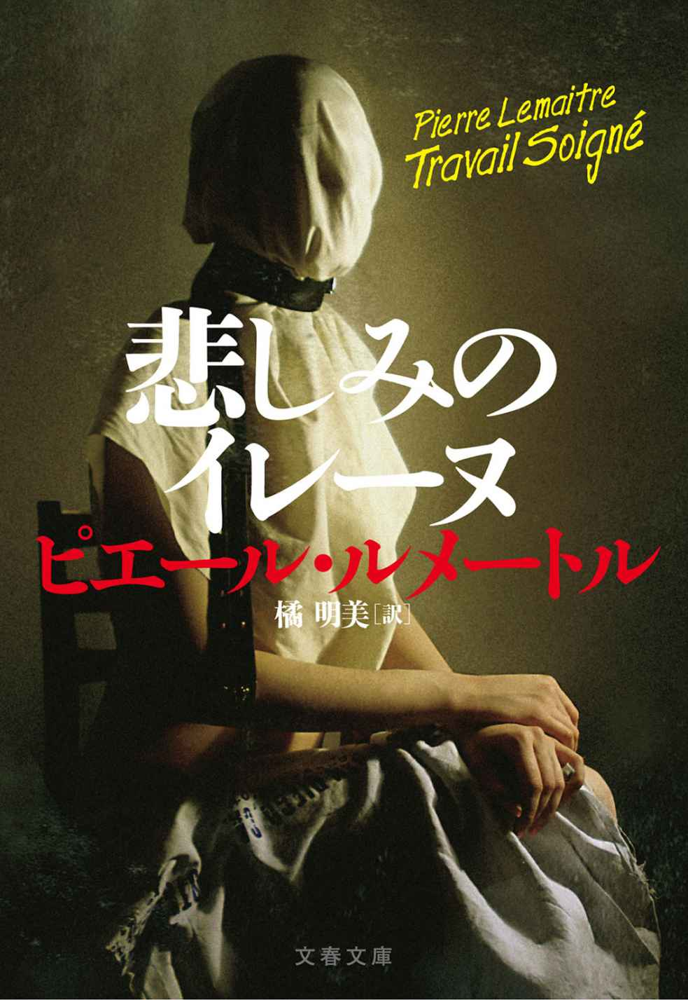
昨年四冠の著者の原点猟奇犯罪の背景に潜む、驚くべき企みとは？
「こんなのは見たことがありません」という部下からの電話があり、パリ警視庁犯罪捜査部のカミーユ・ヴェルーヴェン警部が現場に駆けつけると、二人の女性の惨殺死体があった。ばらばらに切り刻まれ、血まみれで排泄物まみれ、いままで経験したことのないほど凄惨だった。血文字で「わたしは戻った」と書かれ、血の指紋までスタンプで押してある。
カミーユは部下たちと捜査を開始するが、第二の殺人事件が起きる。似た手口の犯罪を探ると、過去にも同種の異様な殺人事件があり、やがて驚くべき共通点が見えてくる。
だが警部たちは知るよしもなかった。犯人が身近に迫ってきていることを......。
本誌のベストテン第一位などミステリー賞四冠に輝く『その女アレックス』の〝前作〟。身長一四五センチの小男カミーユ・ヴェルーヴェン警部シリーズの第一作で、ルメートルの輝けるデビュー作。
ここが魅力！
三島政幸（啓文社ゆめタウン呉店） 「これがルメートルか！『その女アレックス』を未読のまま手にしたが、かえってそれが正解だったようです」
日下三蔵 「『アレックス』のヒットはフロックではなかった。訳出の順が逆になったことで、衝撃が強まった観もある」
深緑野分 「ミステリ愛の深度を試される問題作にして傑作」
滝本誠 「犯人は予想ができても、小説の提示法がまったく予想できなかった」
小山正 「刑事たちのキャラクターが練り込まれており、ニヤニヤしながら読める怪作」
法月綸太郎 「巻頭のロラン・バルトの引用があまりにも的確すぎて、ぐうの音も出ない」
深水黎一郎 「この作者は、登場人物に対して、ドＳなのではないかとの印象を持った次第（もちろん良い意味で）」
② 『スキン・コレクター』
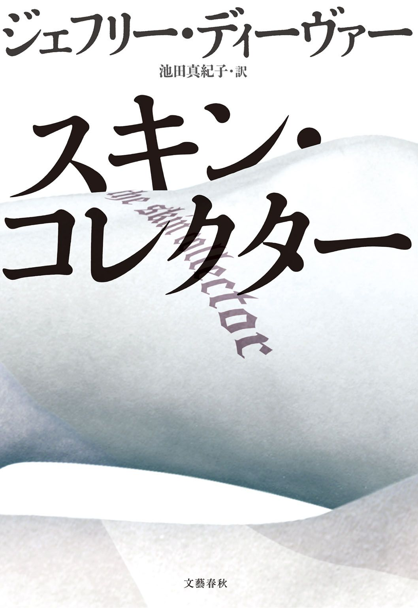
過去の事件が交錯して新たな謎を呼び覚ます。人気シリーズ第十一弾
犯罪の天才ウォッチメイカーが獄中で死亡──科学捜査官リンカーン・ライムに衝撃の報告が届く。その直後に、新たな事件が持ち込まれる。女性の奇怪な死体が発見されたのだ。被害者の腹部には謎の文字が入れ墨されていたが、犯人はインクではなく毒物でタトゥーを彫っていた。
犯人は周到で遺留品はほとんどなく、目をひいたのは書籍の紙片。かつてライムが解決した「ボーン・コレクター」事件に関するものだった。犯人はライムの捜査を学び、手本にしているのか？
一方、ライムのパートナーのサックス刑事は「ボーン・コレクター」事件で出会い、「ウォッチメイカー」事件で再会した、娘のような存在のパムに疎まれて悩んでいた。
そんな状況のなか事件の捜査にあたる。犯人は犯行を続け、謎の文字を被害者の死体に刺青として残していく。文字は一体何を意味するのか？
過去の事件が交錯する、科学捜査官リンカーン・ライムシリーズの第十一作。
ここが魅力！
岩井志麻子 「すぐには殺さない。これはこの本の宣伝コピーだが、こんな怖い殺人予告はない。すぐ殺してやる。こちらの方がずっとましだ」
千街晶之 「名探偵と名犯人の頭脳戦を満喫。リンカーン・ライム・シリーズの原点回帰」
関伸行 「刺青の針に毒を仕込み、徐々に毒殺するアイディアが秀逸です」
川出正樹 「あまりに大胆に配置されていた手がかりに呆然」
平岡敦 「『ボーン・コレクター』を彷彿させる殺人犯。よくもまあ毎回、憎々しい敵を作り上げるものだと感心する」
③ 『ありふれた祈り』
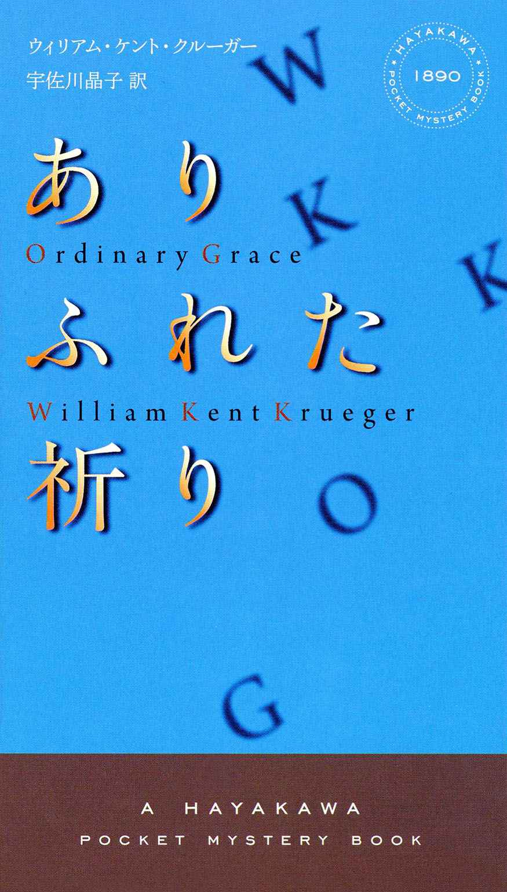
死との遭遇を潜り抜けて、人生の意味を知ってゆく少年の、ひと夏を描く
〝あの夏のすべての死は、ひとりの子供の死ではじまった〟とフランク・ドラムが回想する形で物語が始まる。
一九六一年の夏、ミネソタ州の田舎町で、十三歳の少年が出会う殺人と家族の悲劇がゆったりと語られていく。
フランクは、牧師の父親、芸術家肌の母親、音楽の才能に恵まれた姉、聡明だが吃音症の弟とともに平凡でも幸福な日々を送っていた。特に姉はハイスクールを卒業したばかりで、秋にはジュリアード音楽院への進学が決まっていた。だが、思いがけない出来事が起こり、一変する。
事故、自然死、自殺、殺人。フランクは様々な死を目の当たりにする。そしてそれまで知らずにいた秘密を知り、人生の意味をかみしめ、静かに叡知を身につけていく。
全米四大ミステリー賞（アメリカ探偵作家クラブ賞、バリー賞、アンソニー賞、マカヴィティ賞）の最優秀長篇賞を獲得した青春ミステリー。
ここが魅力！
草川隆 「少年の視点で、立体的な人間ドラマが展開される。地味な語り口だが、最後まで一気に読まされた」
高林さわ 「古いものを敬うアメリカ人好みの物語。どもる弟がいじらしい」
小財満 「クック『緋色の記憶』やランズデール『ボトムズ』に比肩しうる、少年時代の多感さと悲劇を描いたミステリ。クルーガーの作品ではベスト」
筑波大学ミステリー研究会 「少年の無力感や葛藤、家族の危機は重いが、そこから救われる過程が丁寧に描かれる」
朝加昌良（紀伊國屋書店ゆめタウン徳島店） 「インパクト重視のミステリもいいが、こういう作品も読まれてほしい」
④ 『声』
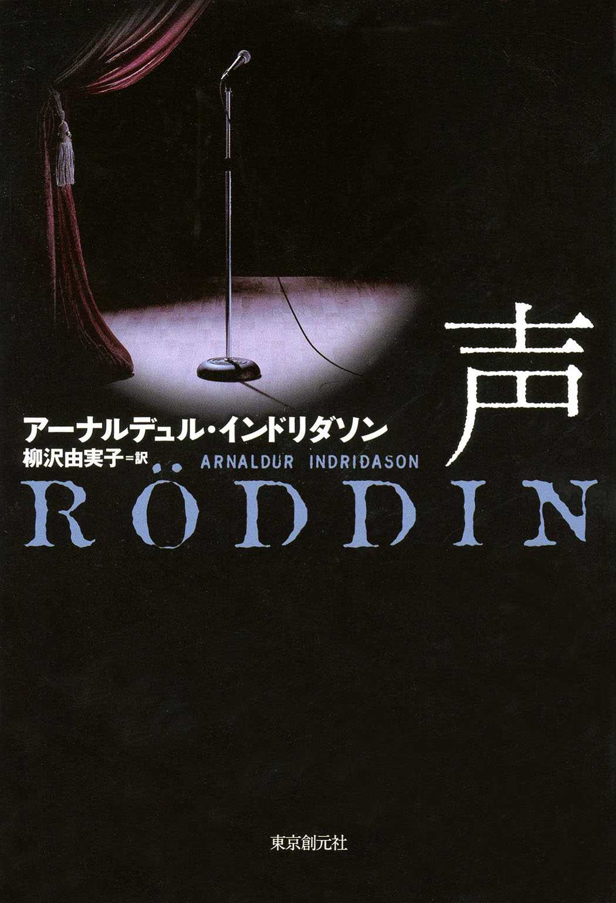
アイスランドの首都レイキャヴィクの大ホテルの地下室で、ドアマンの死体が発見される。半裸の恰好で胸を刃物でめった刺しにされていた。
男は人目を避けるように倉庫まがいの小部屋に住んでいた。部屋には不似合いな、昔のシャーリー・テンプルの映画『リトル・プリンセス』のポスターが貼ってあった。
レイキャヴィク警察犯罪捜査官エーレンデュルは、宿泊客のイギリス人からドアマンの前歴を教えられる。イギリス人は古いレコードの蒐集家で、ドアマンは子供時代、ボーイソプラノの歌手としてかなり有名だった。一体ドアマンに何があったのか。エーレンデュルは私生活の問題を抱えながら事件を追及する。
『湿地』『緑衣の女』に続くアイスランドを舞台にした犯罪捜査官エーレンデュル・シリーズ第三弾。
ここが魅力！
ひらいたかこ 「クリスマスというのに華やかさと無縁の寒々しい事件現場。一見地味な殺人の裏に稀有な才能を持ったボーイソプラノの夢と挫折が」
天羽沙夜 「傷を抱えた者たちの濃密な物語。心の深いところに強く食い込んできます」
松坂健 「被害者の悲しすぎる過去が印象的。『名被害者ベストテン』があれば入賞しそう」
森谷明子 「エーレンデュル捜査官に会うのもこれが三回目。そして本作が最も好きだ」
⑤ 『偽りの楽園』上下
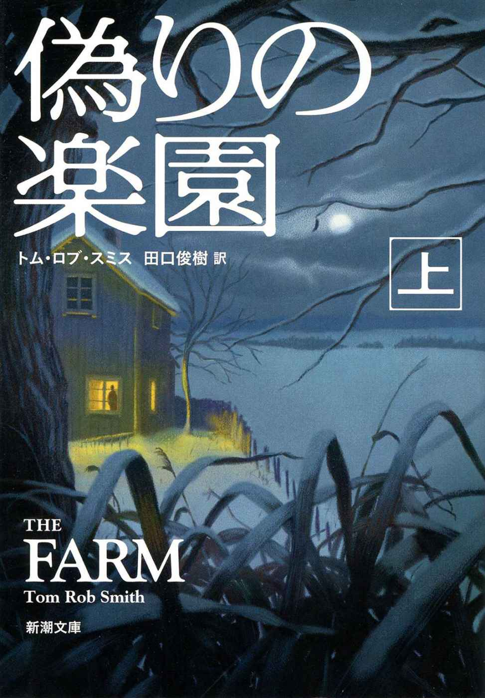
両親はスウェーデンで穏やかな引退生活を送っているはずだった。だが、父親からの一本の電話が、フリーのガーデン・デザイナーのダニエルの生活を変える。「お母さんは病気だ。精神病院に入院したが脱走した」というのだ。
今度は母親から、私は狂ってはいない、お父さんが悪事に手をそめているという電話があり、やがて母親はヒースロー空港に到着する。
母親はスウェーデンの片田舎に蔓延 る悪事を語り、証拠の数々を見せるのだった。母親は正気なのかそれとも病気なのか。ダニエルは真実を探るべくスウェーデンに赴く。
大ベストセラーを記録したスパイ冒険小説の傑作、レオ・デミドフ三部作（『チャイルド44 』『グラーグ57 』『エージェント６』）の作者が描く家族ミステリー。
ここが魅力！
野口百合子 「家族の秘密がテーマのミステリは多いが、イヤミスになりがちなところ、この作品にはリリシズムがある」
鈴木恵 「信じるべきは母の話か、父の話か。読者は最後に意外な真実を知る」
矢部潤子（リブロよむよむ花小金井駅前店） 「最初からドキドキドキドキ。どこへ連れて行かれるんだろう？ の連続」
三橋曉 「レオ・デミドフ三部作で〝愛する者を守るため、人は何をすべきか〟を描いた著者の、意表をつく次の一手」
⑥ 『エンジェルメイカー』
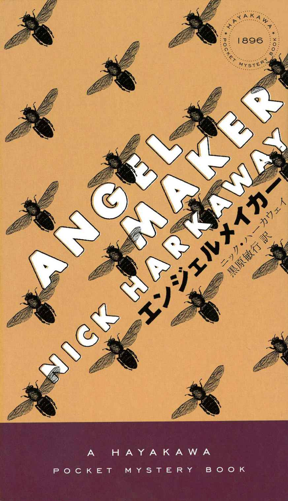
時計職人のジョー・スポークは、祖父から修理の技を受け継いで静かに暮らしていた。父親がトミー・ガンの異名をもつ大物ギャングだったからで、父親とは無縁の生活を送りたかった。
しかし九十歳になる老婆イーディー・バニスターの仕事で、謎の機械を修理した日からすべてが変わる。祖父の遺品を探して謎めいた男たちが訪れたり、不穏な空気が濃くなっていくのだ。
やがてイーディーが引退したシークレット・エージェントであることが語られ、輝かしい往年の日々が展開する。
そして謎の機械が第二次世界大戦直後に開発された最終兵器の鍵であることが判り、ジョーは世界を救うため、父親の銃を手に立ち上がる。
ジョン・ル・カレの息子が描くアメリカン・コミックスのような奇想天外な冒険譚。
ここが魅力！
杉江松恋 「奇想に満ちた歴史改変小説であり、男装の麗人や謎のオーパーツなどの意匠が盛り沢山の冒険小説であり、涙溢れる浪花節小説でもある」
狩井善人 「ポケミス史上最長の超大作。もちろん評価は長さだけのものではありません」
宇田川拓也（ときわ書房本店） 「あらゆるジャンルのミステリの旨味がぶち込まれているが、文章と構成が抜群なので驚くような勢いで読まされてしまう、奇蹟のような作品」
⑦ 『もう過去はいらない』
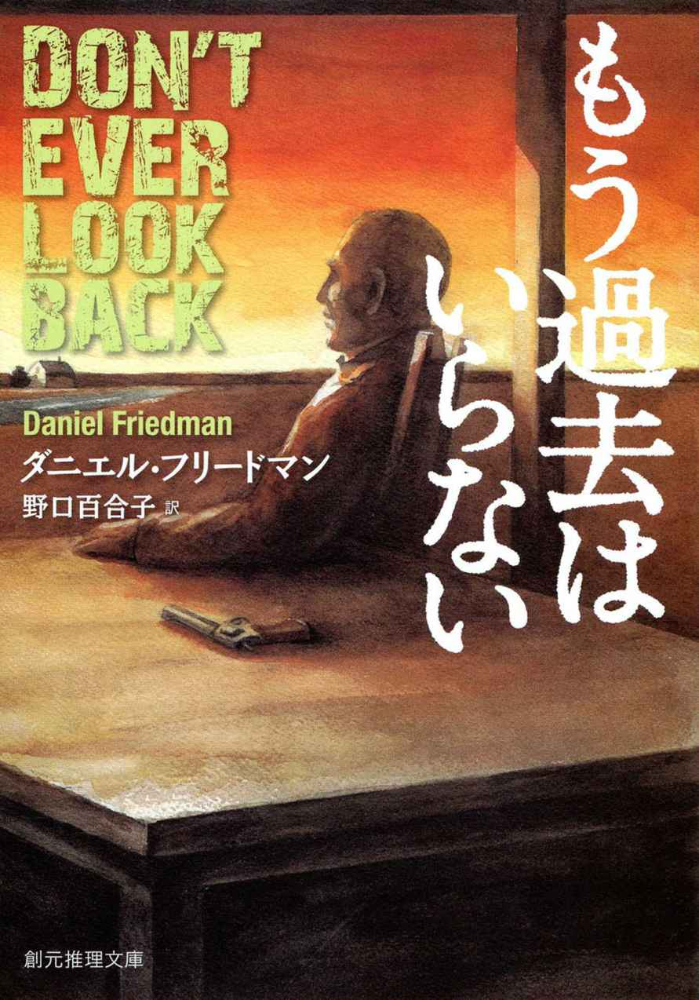
バック・シャッツは八十八歳。メンフィス市警の元殺人課刑事だが、四カ月前の事件で重傷を負って家も失い、今や介護付き施設で過ごす身。だが失敬な奴を、斧を持って追いかける元気は残っていた。
リハビリにいそしむそんなある日、現役時代に因縁のあった伝説の銀行強盗イライジャが現れ、身辺保護を訴えてくる。バックは現状を伝え、警察に出頭するよう説得。それなら自分も立ちあうと。
だが旧知の若手刑事アンドレ・プライスに介添え役を頼み、警察まで連行する途中で黒人の三人組に襲われ、イライジャが拉致されてしまう。
推定世界最高齢のハードボイルドヒーローが帰還。現在と過去を行き来し、シリアスに読ませるシリーズ第二弾。
ここが魅力！
栗木さつき 「第一作を凌ぐ痛快さ！ 歩行器が必要なのに斧を振り回すバック・シャッツ、愛してるよ！」
臼井二郎 「前作を踏襲するだけでよしとせず、重いテーマを掘り下げた野心作」
直井明 「年齢ばかりが強調されるが、公民権法が成立した頃の南部、白人黒人の対立など歴史小説としての魅力も」
諏訪部浩一 「バック・シャッツの物語がかくも胸を打つのは、彼が守るべきものが八十八年の重みを持つためだろう」
③ 『悪魔の羽根』
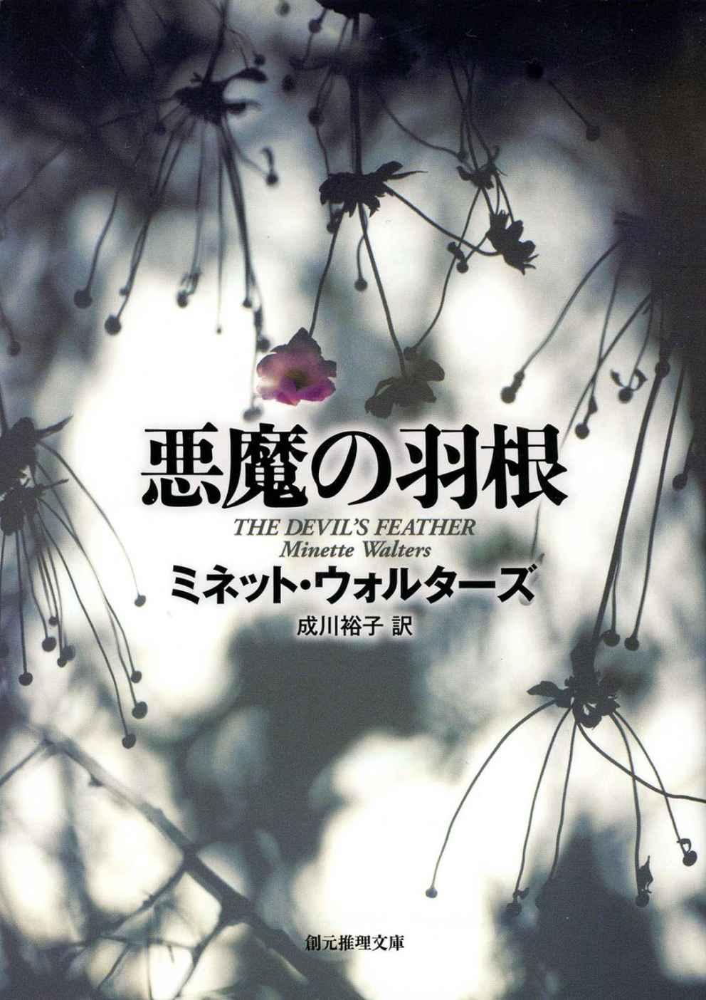
ロイター通信の女性記者、コニー・バーンズは、西アフリカのシエラレオネ首都フリータウンで連続殺人事件を追っていた。五人の女性が相次いでレイプされ、鉈で惨殺されたのだ。事件は元少年兵三人が逮捕され起訴されるものの、不審な点が多かった。
コニーはイギリス人の男を疑っていた。二年後バグダッドで男と遭遇したコニーは、男に拉致監禁され、三日後に解放される。警察には曖昧な事しか語らず、英国に戻り、田舎町に隠れ住んでしまう。彼女は何を隠しているのか。
英国ミステリー界の女王ミネット・ウォルターズの渾身の心理サスペンス。
ここが魅力！
若林踏 「一見デビュー作『氷の家』の焼き直しに思えるが、グローバル化した世界で国境を越える恐怖を描いている点が、著者の新境地と言える」
難波弘之 「やはりこの英国の女流は恐ろしい小説を書く。二人のヒロインの造形が絶品」
永嶋恵美 「この長さで、ひとつも無駄な描写がない。一風変わった『女の友情』物語としても楽しめる」
青木千恵 「くじけずに再生を図るヒロイン像に共感」
⑨ 『ゲルマニア』
一九四四年、ベルリン。元殺人捜査課の警部だったリヒャルト・オッペンハイマーはユダヤ人であることから警察を追われ、妻のリザとともに激しい空襲が続く中、細々と暮らしていた。
だがある夜、家に親衛隊員が現れ連行される。連れていかれたのは若い女性の猟奇殺人現場。親衛隊将校のフォーグラーに事件の捜査を命じられ、彼は否応なく引き受けるが、捜査は難航。事件は連続殺人の様相を呈していく。
ナチス独裁体制下での捜査劇を丹念に描き上げ、ドイツ推理作家協会賞新人賞に輝く新世代ドイツミステリー。
ここが魅力！
堂場瞬一 「『ナチスの時代に特殊指令を受けたユダヤ人刑事』という設定にやられた。まだまだ小説になっていないネタが転がっていると実感」
大倉崇裕 「その時代、その場所に生まれてしまった者たちの息遣いが、圧倒的な存在感を持ってひしひしと伝わる」
温水ゆかり 「今年は戦争にまつわる小説をよく読んだが、本書がピカイチでした」
福田和代 「極限状態で、相棒のＳＳ大尉との間に生まれる淡い友情が、なんとも美味」
⑩ 『禁忌』
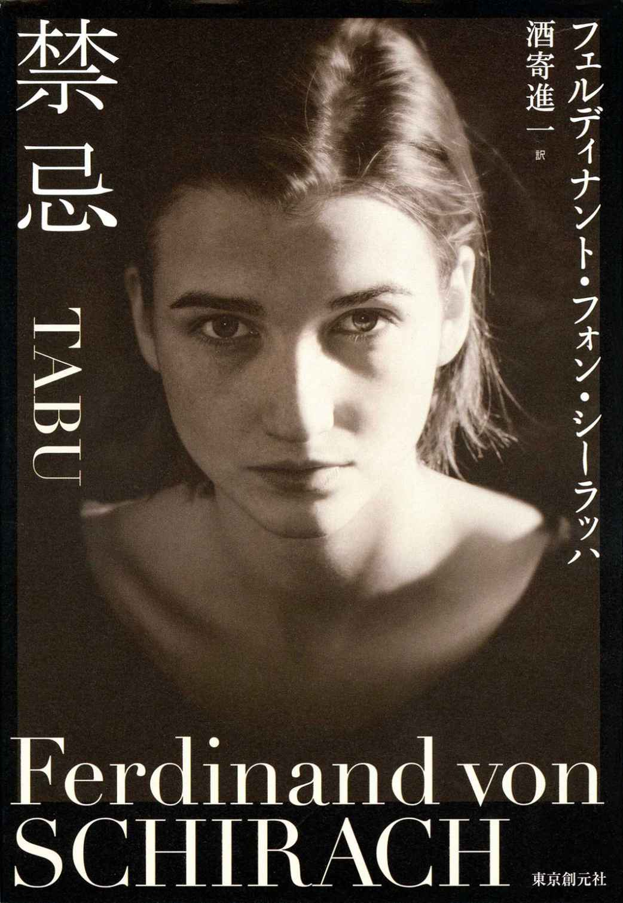
ドイツの名家エッシュブルク家の御曹司に生まれたゼバスティアン・フォン・エッシュブルクは普通の人以上に色を認識する共感覚の持ち主。寄宿学校の時代に父親が自殺する波乱もあったが、学校を出ると写真を学び、一流写真家にのし上がっていく。
だが、やがて彼は少女の誘拐事件の容疑者として緊急逮捕される。彼は殺人の自供をしたというが、その後接見したベテラン弁護士のビーグラーには無罪を主張する。
前後半で展開が変わる構成の妙。スリリングな法廷劇を通じて芸術家の本質にも迫る弁護士作家の長篇第二作。
ここが魅力！
三浦天紗子 「法廷劇に芸術論、罪と罰やトラウマ。小説という二次元の中に作られた完璧なインスタレーションと思う」
岩田準子 「誰にも理解されない為に書かれたかのような、崇高な芸術性を感じた」
中山大樹（朗月堂） 「主人公ゼバスティアンの成功を描く自伝仕立ての物語。『犯罪』とまた違う〝罪〟の形を感じる」
間室道子（代官山蔦屋書店） 「表紙の写真、どこかおかしいと思いませんか？ 読後、衝撃が走ります」
『薔薇の輪』クリスチアナ・ブランド 「好きな作家の初訳作。ストーリーテラーぶりが楽しめる」（黒崎緑）
『ドクター・スリープ』スティーヴン・キング 「異なる構成でもしっかり『シャイニング』の続編になっている」（関口晴生・トーハン）
『街角の書店』フレドリック・ブラウン他 「非常に楽しめたアンソロジー。〝奇妙な味〟の短篇の魅力を再認識」（香納諒一）
『ガール・オン・ザ・トレイン』ポーラ・ホーキンズ 「三人の女の語りに翻弄されていると、真相を見抜けないかも」（折原一）
『ブエノスアイレスに消えた』グスタボ・マラホビッチ 「ラテンの血か、作者の情熱を感じる力作」（緒川怜）
『サンドリーヌ裁判』トマス・Ｈ・クック 「妻の死をきっかけに、旅に出る中年の大学教授。即再読し、二度目も泣きました」（海野碧）
『街への鍵』ルース・レンデル 「骨髄移植が結ぶ恋と、殺人事件が並行して巧みに描かれる」（川田弥一郎）
『彼女のいない飛行機』ミシェル・ビュッシ 「摑みが完璧で、これほど最初から没入できた作品もない」（三津田信三）
ここ数年北欧作品が目立ったが、今年は北欧のみならず従来の英米からフランス、ドイツ、南米と世界各国の小説がランクインしているし、ジャンルも本格から警察、ハードボイルド、サスペンスと幅広い。強いてあげるなら新人よりもベテラン作家（それもベストテン常連組）が多いことか（今年鬼籍に入ったレンデルはもっと上位でいい）。
それにしてもルメートル強しである。二年連続ベスト１。① は『その女アレックス』の前作で、邦題は結末を暗示するが、悲劇を予感させてもなお読ませ、衝撃を与えるのは本物の作家の証左。それはゴンクール賞を受賞した『天国でまた会おう』（早川書房）にもいえる。節々に驚きを隠した一気読みの面白さで、語りの巧さには脱帽だ。
この語りの巧さが際立つ作品が上位を占めている。鮮やかなどんでん返しの① ② 、滑らかな回想の⑤ ⑥ ⑦ 、そして⑲ のクックだ。
クック作品は夫婦間の愛憎を主題にしているが、家族という主題は永遠で、③ ④ ⑤ ⑫ 、『夏の沈黙』『ブエノスアイレス～』に顕著。特に③ は繊細な抒情が印象的だし、④ は麻薬中毒の娘とエーレンデュルの関係が切々たる響きをもつし、『夏の沈黙』は愛と悲しみと許しをめぐって強烈だ。
なお選外だが、語りの巧さが際立つ家族を隠し味にした作品として、アイデア満載の法廷小説、スティーヴ・キャヴァナー『弁護士の血』（ハヤカワ文庫）と劇的な警察小説のジョー・ネスボ『ネメシス 復讐の女神』（集英社文庫）も今年の収穫。
（池上冬樹）

文春e-Books
週刊文春presents
全国のミステリー通、書店員が選ぶ
週刊文春ミステリーベスト10
２０１５
２０１５年１２月２０日 発行
編 集 週刊文春ミステリーベスト10 班
発行者 村上和宏
発行所 株式会社文藝春秋
東京都千代田区紀尾井町３─２３
郵便番号 １０２─８００８
電話 ０３─３２６５─１２１１
文藝春秋の電子書籍
『片桐大三郎とＸＹＺの悲劇』
倉知淳
聴覚を失ったことをきっかけに引退した時代劇の大スター、片桐大三郎。古希を過ぎても聴力以外は元気極まりない大三郎は、その知名度を利用して、探偵趣味に邁進する。あとに続くのは彼の「耳」を務める野々瀬乃枝。今日も文句を言いつつ及枝は、スターじいさん大三郎のあとを追う！
『キャプテンサンダーボルト』
阿部和重・伊坂幸太郎
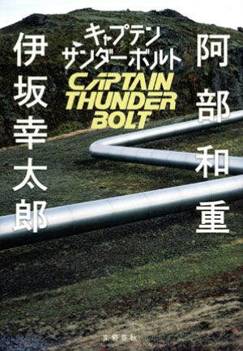
世界を救うために、二人は走る。東京大空襲の夜、東北の蔵王に墜落したＢ29 。公開中止になった幻の映画。迫りくる冷酷非情な破壊者。すべての謎に答えが出たとき、カウントダウンがはじまった。二人でしか辿りつけなかった到達点。前代未聞の完全合作。
『さよならの手口』
若竹七海
探偵を休業し、ミステリ専門店でバイト中の葉村晶は、古本引取りの際に白骨死体を発見して負傷。入院した病院で同室の元女優の芦原吹雪から、二十年前に家出した娘の安否についての調査を依頼される。かつて娘の行方を捜した探偵は失踪していた──。有能だが不運な女探偵・葉村晶が帰ってきた！
『赤い博物館』
大山誠一郎
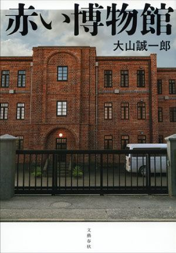
企みを、看破せよ──！ キャリアながら〝警視庁付属犯罪資料館〟の館長に甘んじる謎多き美女と、一刻も早く汚名を返上し捜査一課に戻りたい巡査部長。図らずも「迷宮入り、絶対阻止」に向けて共闘することになった二人が挑む、難事件。予測不能の神業トリックが冴え渡る、著者初の本格警察小説!!
『ビッグデータ・コネクト』
藤井大洋

京都府警サイバー犯罪対策課の万田は、ＩＴエンジニア誘拐事件の捜査を命じられた。協力者として現れたのは冤罪で汚名を着せられたハッカー、武岱。二人の捜査は進歩的市長の主導するプロジェクトの闇へと......。行政サービスの民間委託計画の陰に何が？ ＩＴを知りつくした著者が描くビッグデータの危機。新時代の警察小説。
『悲しみのイレーヌ』
ピエール・ルメートル
異様な手口で惨殺された二人の女。カミーユ・ヴェルーヴェン警部は部下たちと捜査を開始するが、やがて第二の事件が発生。カミーユは事件の恐るべき共通点を発見するが、そこにはあまりに悪意に満ちた犯行計画が......。大ベストセラーとなった『その女アレックス』で活躍する刑事たちのデビュー作品にして、著者渾身の衝撃作！
『スキン・コレクター』
ジェフリー・ディーヴァー
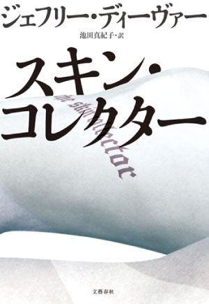
科学捜査官リンカーン・ライムは、犯罪の天才ウォッチメイカーが獄中死したとの報を受けた。直後、ライムが解決した〝ボーン・コレクター〟を研究したと思われる殺人事件が起きる。犯人はボーン・コレクターの手口とライムの捜査術に学び、殺人をくりかえしているのか？ 次の犯行はどこで起きるのか？ すべてを解くカギは証拠の中に！ 〝ドンデン返しの魔術師〟ディーヴァーが放つ会心作。緻密な伏線と手がかりから、二重三重に擬装された衝撃の完全犯罪が浮かび上がる！
『髑髏の檻』
ジャック・カーリイ
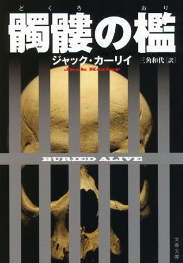
刑事カーソンが休暇で赴いたケンタッキーの山中で連続殺人が起きる。犯人はネット上の宝探しサイトで犯行を告知し、死体はどれも奇怪な装飾を施されていた。捜査に巻き込まれたカーソンの前に現れたのは、実の兄にして逃走中の連続殺人鬼ジェレミー。ディーヴァーばりのスリルとサプライズで人気のシリーズ第６弾。
『ドクター・スリープ』上下
スティーヴン・キング
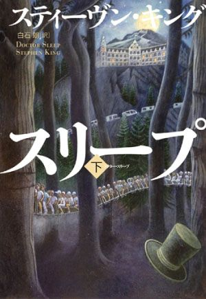
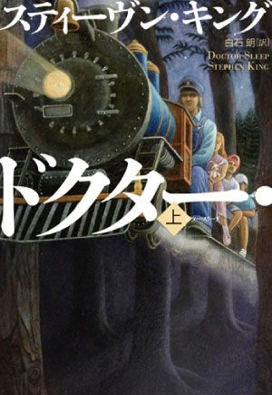
冬季閉鎖中のリゾートホテルの管理人一家を、ホテルに巣食う悪霊たちが襲う。その恐怖と惨劇をおそるべき筆力で描ききった20 世紀史に残るホラーの金字塔『シャイニング』。あれから36 年、巨匠キングは「その後の物語」を書く。超能力〝かがやき〟を持つ少年ダニーは、どんな人生を歩んだのか？ そして大人になった彼を、宿命は新たなる惨劇へと導くのだ。迫る邪悪と、彼と似た能力を持つ少女の誕生──誰も予想しなかった名作の続編が幕を開ける！
『限界点』
ジェフリー・ディーヴァー
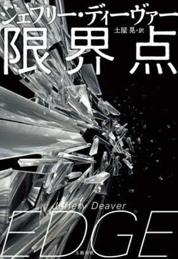
連邦機関に属する警護官、コルティは、命を狙われた者たちを守り抜くプロのボディーガード。つねに敵の手を読み、綿密な戦略を立てて任務を遂行する。対する凄腕の〝調べ屋〟ラヴィングは、ターゲットを拉致し、情報を引き出して殺すエキスパート。緻密な計略で警護の手を巧みにかいくぐり、標的を殺す。二人のプロが知力を尽くして戦う死のゲームが幕を開ける！ 知的スリラーの旗手の真骨頂、熾烈なるノンストップ・サスペンス。
本作品の全部または一部を、著作権者ならびに株式会社文藝春秋に無断で、複製（コピー）、転載、改ざん、公衆送信（ホームページなどに掲載することを含む）することを禁じます。万一このような行為をすると、著作権法違反で処罰されます。
〈お断り〉
本作品を電子書籍化するにあたり、一部の漢字が簡略体で表示される場合があります。また、ご覧になる機種により、表示の差が認められる場合があります。